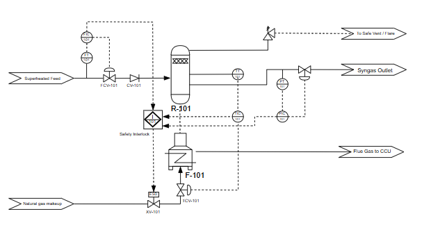
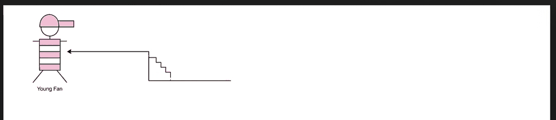
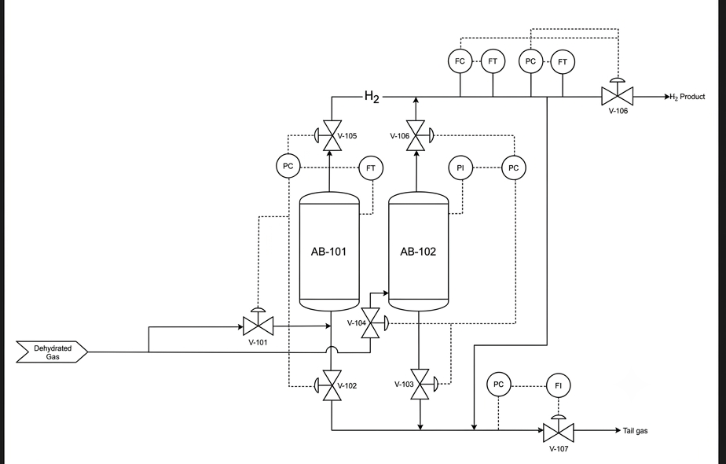

3 จุดใหญ่ที่ต้องแก้ก่อน
Fuel cut-off ตัดไม่ครบ
I-101 ปิดแค่ XV-101 บน natural gas makeup แต่เชื้อเพลิงหลักของ F-101 คือ PSA tail gas (6.01 MW, 73.7%) ซึ่งเส้นนี้ไม่มีในแบบเลย
High-P trip ไม่ได้หยุด feed
ถ้า outlet ตัน interlock จะตัดแค่ไฟ แต่ feed ยังไหลเข้า R-101 ต่อ ควรมี XV บน feed ให้ I-101 สั่งปิด
แก๊สไม่ผ่าน catalyst bed
feed เข้ากลางถัง ออกกลางถัง แต่ catalyst วาดไว้ด้านบน และไม่ชัดว่า R-101 รับความร้อนจาก F-101 ยังไง
กดเลขบนแบบเพื่อดูแต่ละจุด
ใช้ปุ่มก่อนหน้า/ถัดไป หรือกดลูกศร ← → บนคีย์บอร์ดก็ได้

เทียบ HAZOP ทีละแถว
อ้างอิง Memo 6 ตารางที่ 14 (หน้า 32–34) เทียบสิ่งที่ HAZOP บอกว่ามี/ต้องเพิ่ม กับสิ่งที่วาดจริงในแบบ
ลำดับแก้แบบ
เรียงจากสำคัญที่สุด ติ๊กแล้วระบบจำไว้ในเครื่องนี้
ข้อมูลที่ยังต้องยืนยัน
ถ้าได้คำตอบข้อพวกนี้จะตัดสินข้อที่ยังค้างได้ทั้งหมด
เป็น fired tubular reformer (catalyst อยู่ใน tube ใน F-101) หรือเป็นถังแยกที่รับความร้อนผ่าน heat exchanger?
I-101 trip อะไรบ้าง: ตัดแค่ NG หรือตัด tail gas และ feed ด้วย?
Tail gas เข้าแค่ F-101 หรือแบ่งไป E-104 ด้วย? (สไลด์ 13 เขียนว่า "R-101 / F-101 & E-104")
Design pressure ของ R-101 และ set pressure ของ PSV คือเท่าไหร่?
เส้น tail gas/air อยู่ในแบบแผ่นอื่นหรือเปล่า? ถ้าอยู่ ข้อ #1 จะลดเหลือแค่ต้องใส่ off-page connector
ขอไฟล์ต้นฉบับ (.drawio/PDF) หน่อย ตอนนี้ tag ตัวเล็กอ่านได้แค่พอเดา
สมมติ Claude ปรับ Claude จะปรับแบบนี้นะอั๊ย ✏️
มีให้ 2 เวอร์ชัน: พื้นฐาน แก้เฉพาะที่ HAZOP ต้องการ อ่านง่าย ส่วน ละเอียด (REV B) ใส่ของแบบโรงงานจริงเพิ่ม ทั้งสองแบบตั้งบนสมมติฐานว่า R-101 เป็น catalyst tube อยู่ใน F-101 ต้องเช็คกับอาจารย์อีกทีนะ


อั๊ยถาม · Claude ตอบ 💬
TY คืออะไร?
TY = Temperature relay (ตัวคำนวณ/รวมสัญญาณ) ใน REV B ใช้เอา flow ของ feed มาช่วยปรับไฟล่วงหน้า (feed-forward) ตอน feed ลดลง ถือเป็นของ advance ไม่จำเป็น เวอร์ชันพื้นฐานเลยตัดออก ให้ TIC-101 สั่ง TCV-101 ตรง ๆ แทน
AT คืออะไร?
AT = Analyzer Transmitter เครื่องวัดองค์ประกอบแก๊ส AT-101 วัด O₂ ใน flue gas เพื่อดูว่าเผาไหม้ดีไหม HAZOP ไม่ได้ขอไว้ เวอร์ชันพื้นฐานเลยไม่ใส่
ทำไมต้องมี bypass?
Bypass (ท่อเลี่ยงพร้อมวาล์วมือ) มีไว้ให้ถอดซ่อม control valve ได้โดยไม่ต้องหยุดโรงงาน ระหว่างนั้นเปิด bypass แล้วปรับ flow ด้วยมือไปก่อน เป็น good practice ของแบบจริง แต่ HAZOP ไม่ได้ขอ ระดับวิชานี้ไม่ใส่ก็ได้ เวอร์ชันพื้นฐานเลยตัดออก
ตัวหนังสือสีแดง ๆ หมายถึงอะไร?
ไม่ใช่ error นะ มีอยู่ 2 แบบ:
① Alarm / trip ตัวอักษรตัวแรกบอกว่าวัดอะไร ตัวท้ายบอกว่าแจ้งเตือนตอนไหน เช่น TAH = Temperature Alarm High (อุณหภูมิสูง), FALL = Flow Alarm Low-Low (flow ต่ำมาก), TSHH / PSHH = ถึงขั้นสูงมากจน interlock สั่งหยุด (trip)
② FC / FO = ถ้าไฟหรือลมที่ใช้ขับวาล์วดับ วาล์วจะปิดเอง (Fail Closed) หรือเปิดเอง (Fail Open) เลือกให้ปลอดภัยไว้ก่อน เช่น วาล์วเชื้อเพลิงควรปิดเอง
เวอร์ชันพื้นฐานเปลี่ยนเป็นสีเทา ย่อเหลือ H / L / HH / LL และมีคำอธิบายใน legend
รู้สึกว่าไม่มี pressure relief valve?
มีอยู่แล้วนะ คือ PSV-101 (Pressure Safety Valve เป็นอุปกรณ์เดียวกับ pressure relief valve) ใน REV B สัญลักษณ์เล็กเลยดูไม่ออก ในเวอร์ชันพื้นฐานใส่กรอบแดงให้เห็นชัดแล้ว อยู่บนท่อ syngas หลัง R-101 แล้วปล่อยไป flare
ที่วางไว้ตรงนี้เพราะ HAZOP 3A บอกว่าความดันสูงเกิดจาก outlet ตันหรือวาล์วปลายทางค้างปิด PSV จึงต้องอยู่ก่อน PCV-101 เสมอ ถ้าอั๊ยอยากวางไว้บนหัว R-101 เหมือนแบบเดิมก็ได้ ขอแค่ไม่มีวาล์วคั่นระหว่าง R-101 กับ PSV
P&ID ส่วน PSA ที่ตรวจก่อนหน้า
concept 2-bed PSA ใช้ได้ แต่มีจุดต้องแก้ตามนี้ กดเลขบนแบบเพื่อดูได้เหมือนกัน

เป็นกราฟิกที่หลุดมา ไม่ใช่ส่วนของ P&ID

- V-101 ชนกับชื่อถังใน Memo 4: Memo 4 ใช้ V-101 เป็น knock-out drum ส่วนวาล์วควรใช้ tag XV/PV
- Instrument ไม่มีเลข loop: ใส่เช่น PT-101 / PC-101
- การสลับหอ: ควรใช้ sequence controller/PLC (timer) ให้ pressure เป็นแค่ permissive
- เพิ่ม AT วัด H₂ purity: จำเป็นถ้าจะอ้าง fuel-cell grade และควรมี check valve, block/bypass และ drain/vent ด้วย
- Off-page: ระบุว่ามาจาก S-102 และ tail gas ไป F-101
- เนื้อหา 5. ใน Memo 2: ประโยค "ในขณะที่อีกหอหนึ่งจะทำการลดความดัน…" พิมพ์ซ้ำ 2 รอบ